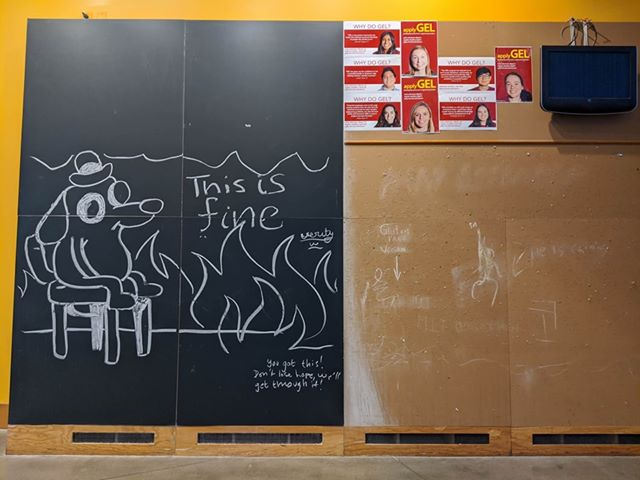
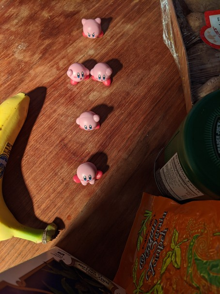

Updates from The Summit
Sunday, March 22
Stata Center, 2020-03-21 15:53. Empty tables. Bulletin boards free of posters (GEL survived due to being high). Chalk art found on a blackboard. The work of stragglers left on campus? Or the result of custodial staff preserving the echoes of students who have since left campus?
Saturday, March 21
The Kirbys are pink, just like the cake. How many Kirbys are in the cake picture? waka waka waka.
Friday, March 20
John and I took a walk and went grocery shopping today. We thought going on a weekday after lunchtime would mean the fewest people out and about, but Trader Joe's was relatively busy for this time of day. We had to queue outside for a few minutes. It was hard to maintain six feet of separation inside the store. The atmosphere was also a bit tense, but maybe some of that was inside my head.
Thursday, March 19
One argument for staying at John's apartment in New Haven over mine in Cambridge was that he had an electronic keyboard. The ability to play music seemed like a good idea if we were going to be staying inside all day. We picked up this one (on loan from an MIT student) on Tuesday, and we finally brought it in from the stairwell today. Stay tuned for a musical post... 🎶

Wednesday, March 18
Toilet paper has been on the news a lot...not only in the U.S. but also in Japan, HK, Australia. Many people's first impressions of how the virus was affecting society were through hearing about TP shortages. Don't hoard toilet paper. The supply chain is fine.

Tuesday, March 17
I am a TA for 6.031, Elements of Software Construction. At today's staff meeting, we tested out using zoom and webex for holding virtual office hours. I had not really used these tools before this month, but they seem pretty nifty and have useful features such as remote screen control. This picture took a laptop, a zoom session, two phones, and two Moris to create. How many Kirbys did it take?

Foreward
March 17, 2020: ᴄᴏᴠɪᴅ-19 has caused significant disruptions this year. MIT is essentially closed, all classes virtualized and lab research disrupted. Almost all the people I know are now at home, practicing social distancing. My roommates have 1) returned to Marietta, 2) followed (1) to Marietta, and 3) left for Princeton. My brother is staying with me in Cambridge, and we have decided to leave The Summit¹ only for essential² reasons.
I have decided to post daily, or close to daily, slice-of-life moments here, as a way to share the mundanities that create normalcy, as a signal of our presence.
Choosing a platform for this was difficult. I have a Wordpress blog, but it felt too formal to have to draft and publish posts. Too many casual acquaintances on Facebook, didn't want to clutter feeds with frequent posts. Instagram has the greatest potential, it seems, but I did not want to force non-users onto a new platform. So I have created a static page, hosted by Github Pages, that I plan to update daily. Maybe one of these days I will figure out a better content management or generation system.
¹ The Summit is the name of my apartment. ² We really only have a weak framework for this.Monday, March 16
The first post is retroactive. Yesterday, I made some earl grey yogurt cake. Adam and Dhriti took some on their road trip to Princeton! (Which Kirby is me, and which one is John?)